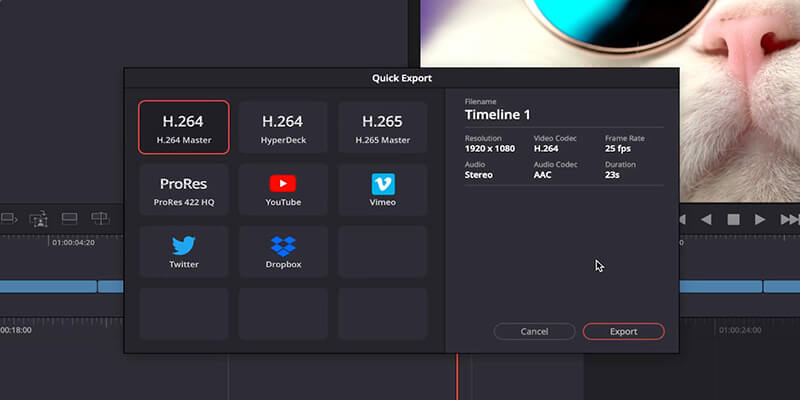
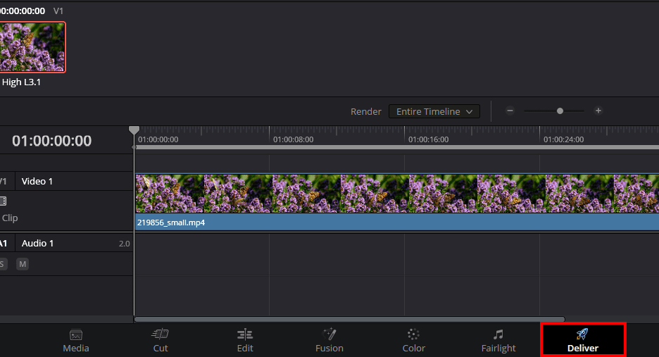
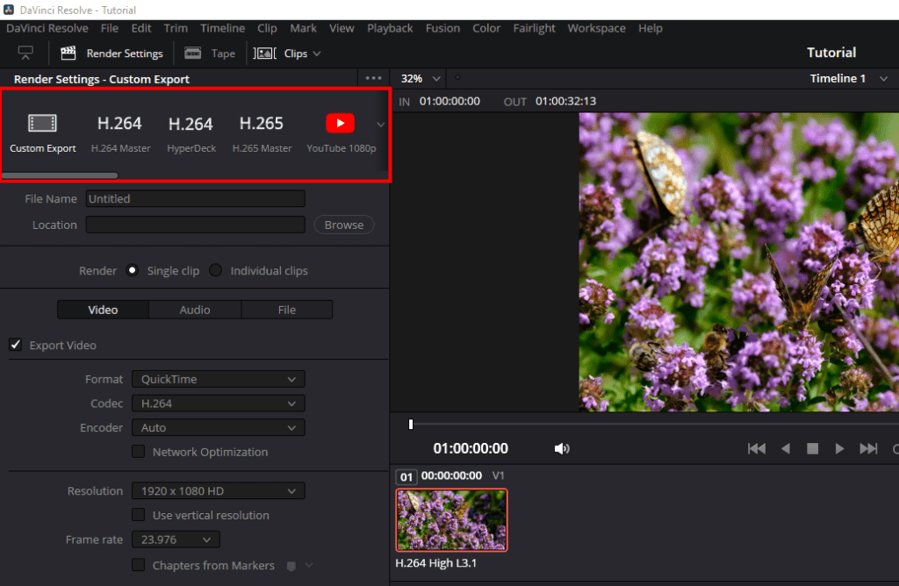
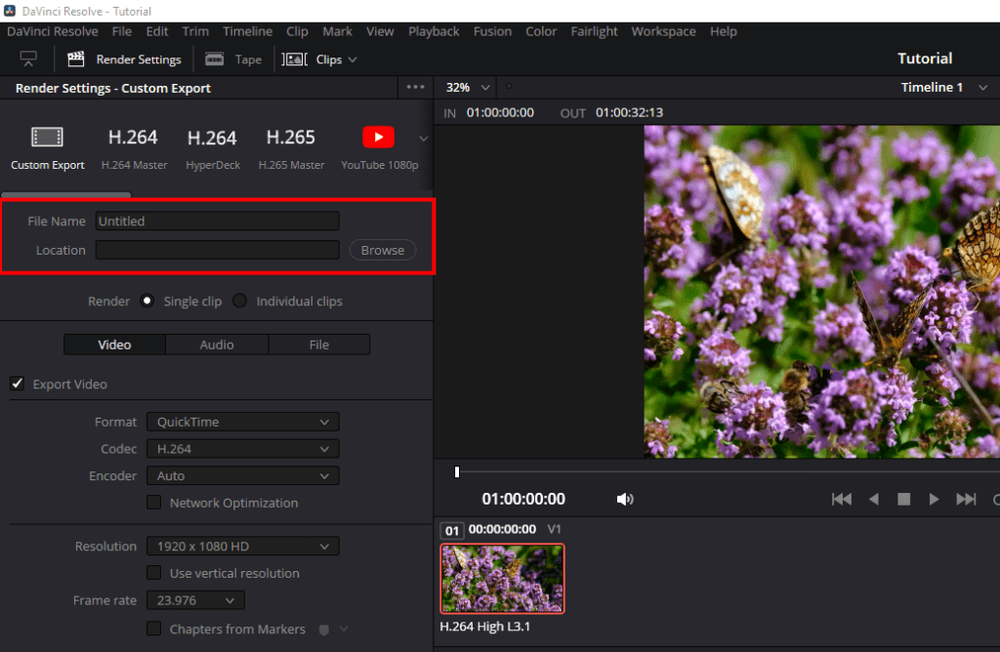
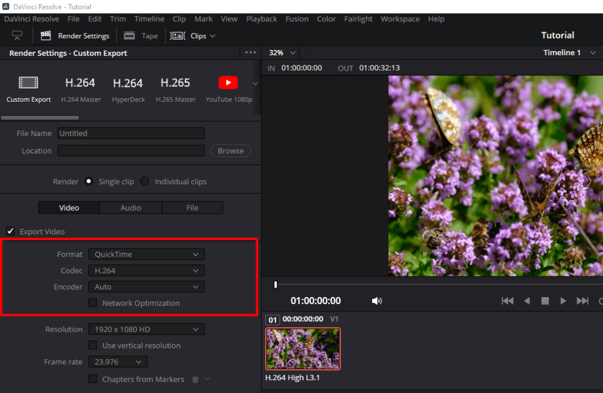
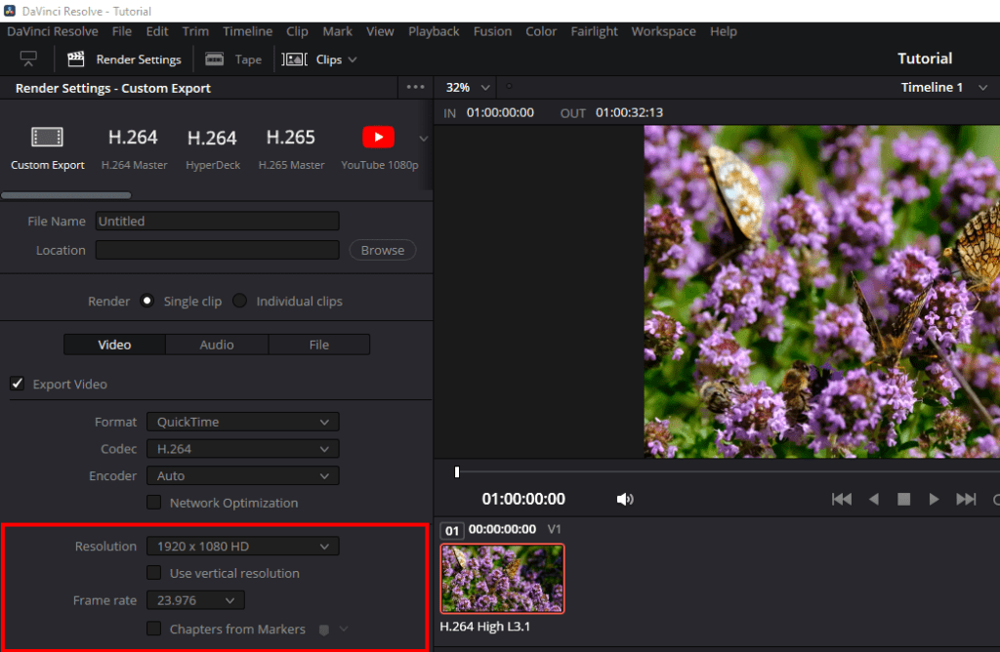
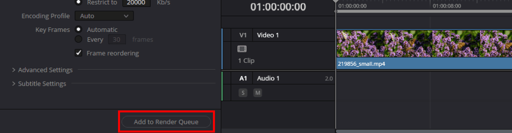
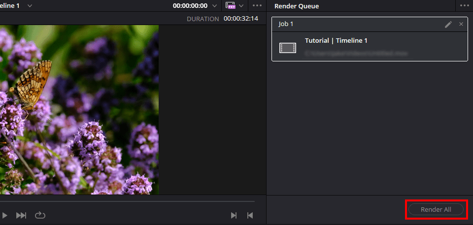

How to export in Dacinci Resolve

How to render your video in Davinci Resolve
You can render your timeline quickly by pressing File > Quick Export. DaVinci Resolve will offer a handful of preset export settings you can choose from. Select the one you want, then press Export.
-
Selesct the deliver tab

-
Choose a preset or select custom export

-
Set your filename and destination location

-
Select your video format and codec

- Choose your resolution and frame rate

- Add to render queue

- Select Render all
